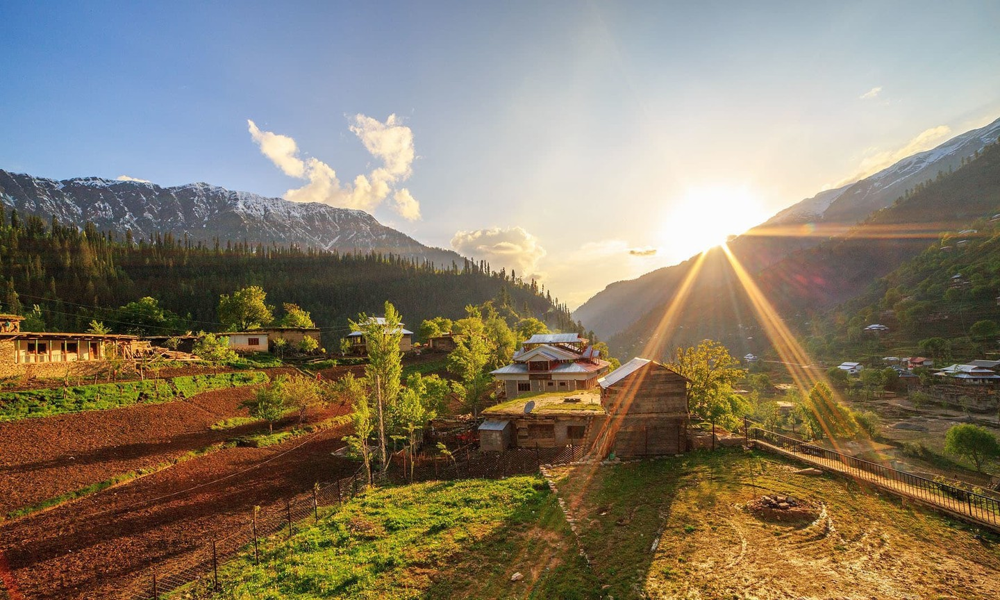

- Home
- Mountains
- Velleys
- Deserts
- Rivers
Neelum Valley
Neelum Valley is located in Azad Kashmir and being there is like jumping into a bright coloured painting
with a marvel waiting at every corner. It contains a mind-altering beauty as it is a valley interspersed
with natural wonders every few kilometres. Neelum Valley is filled with lush green hills, dense forests,
glorious waterfalls and freshwater streams that glisten under the sun. Walking through the valley,
travellers will encounter bright smiles from the locals and against a backdrop of the beautiful green
valley, it is easy to believe you have walked straight into heaven.
